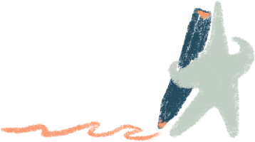
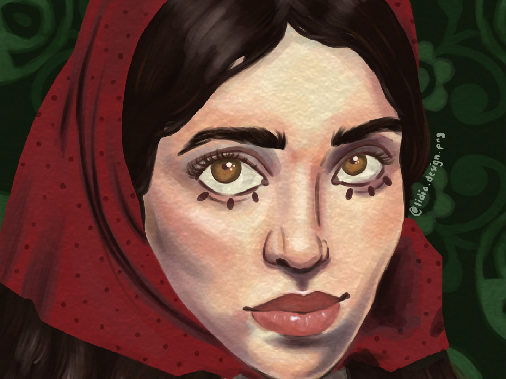
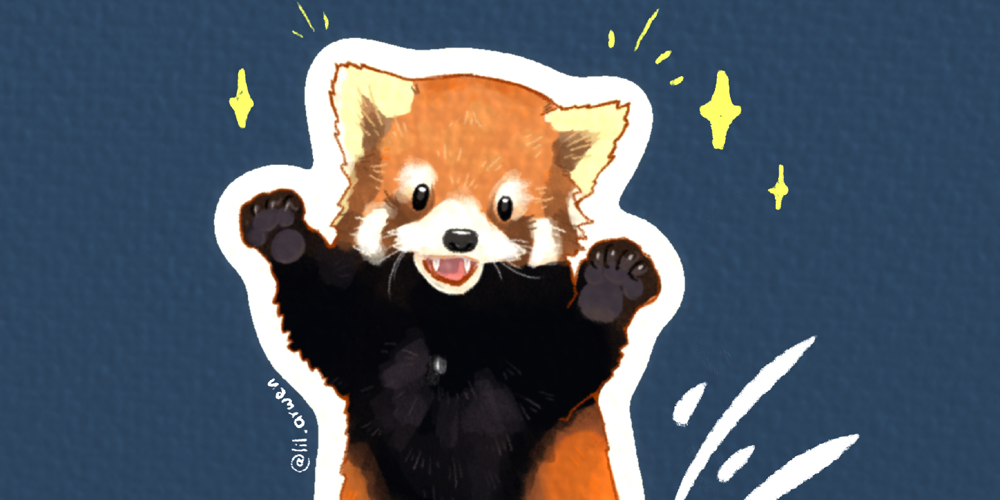
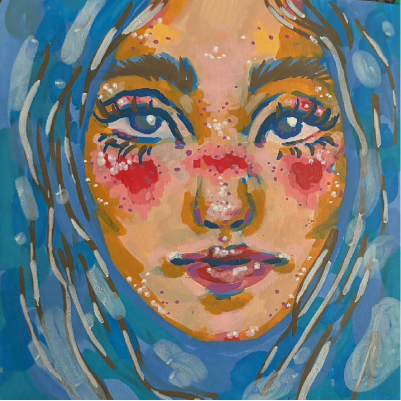
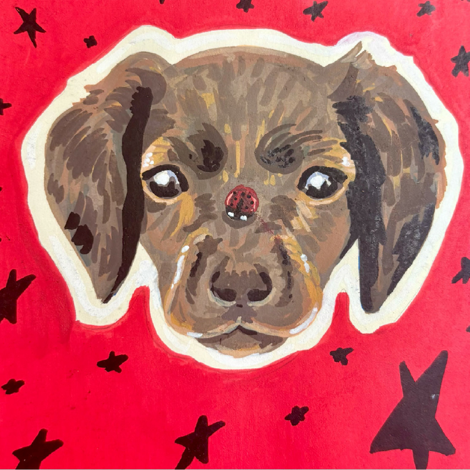
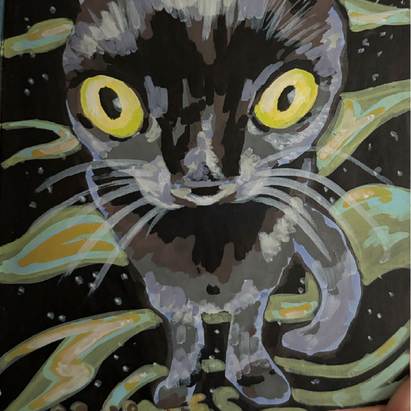
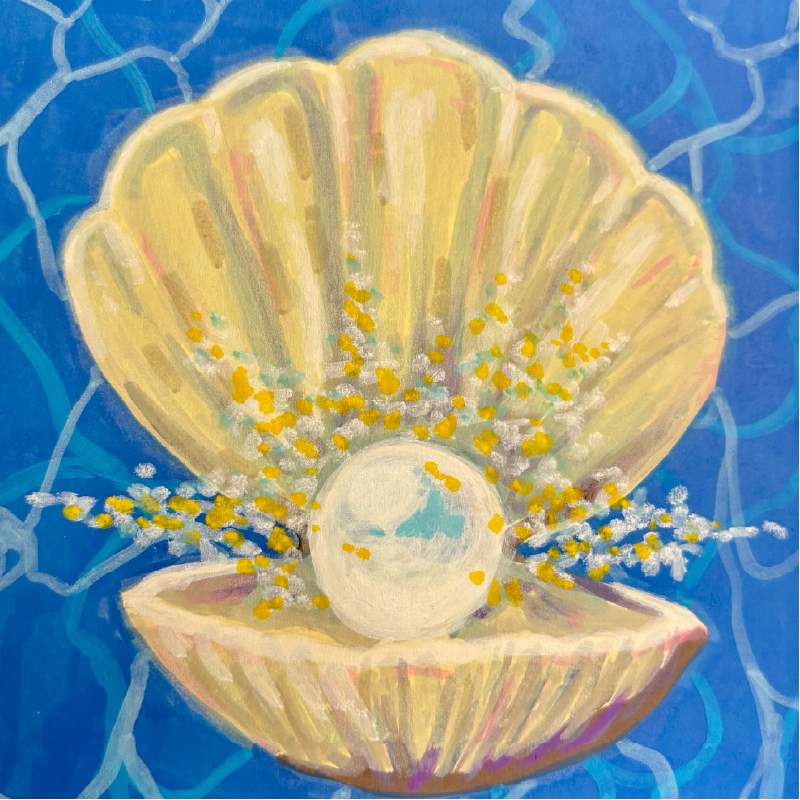

Mes réalisations personelles


Le projet
Depuis petite, je suis passionnée de dessin. J'ai pu explorer beaucoup de médiums, j'affectionne beaucoup l'aquarelle, l'acrylique et le dessin digital. En ce moment j'ai une légère obsession pour les marqueurs acryliques, qui permet d'expérimenter avec les couleurs et les formes. Chaque dessin est une nouvelle exploration créative.

Mon style de dessin est en constant changement, adaptable. J'aime le réalisme mais aussi le surréalisme et les dessins plus enfantins, "naïfs". La particularité de l'art qu'il nous permet de nous exprimer de milles et une façon.



